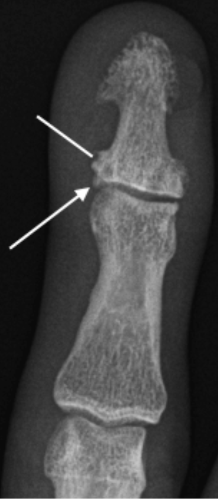

Enthesophtyte
- An enthesophtyte is abnormal new bone formation at the insertion of ligament, tendon or capsular attachment to bone (enthesis) in response to stress or inflammation at that site.
- Common sites include the iliac crests, patella (quadriceps and patellar tendons) and calcaneus (Achilles tendon).
- Uncommon in the hand radiograph, usually seen in seronegative arthritis at capsular attachment sites, e.g.PsA
Example Radiograph

Enthesophyte formation (arrow) at capsular attachment DIPJ in a patient with PsA. Note new bone formation (line) more distally that is commonly seen in PsA.